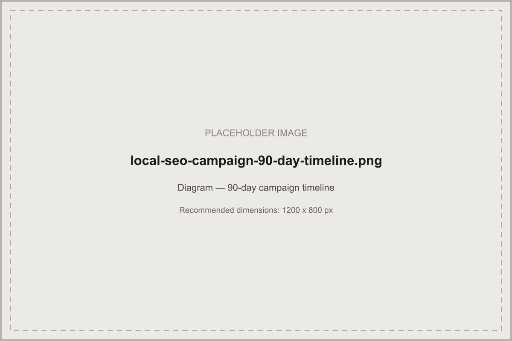

Your local SEO strategy defines what to build. This is how to actually execute it — audits, timelines, deliverables, and reporting that keep a campaign accountable.
In short: a local SEO campaign is the structured execution of a local SEO strategy — starting with prerequisites and audits (business, competitor, GBP, technical, citation), moving through content and authority production on a defined timeline, and closing every reporting cycle against agreed KPIs. It's the "how," where the strategy is the "what."
Where a local SEO strategy defines what a complete system should contain, a local SEO campaign is how that system actually gets built and run — as a structured, time-bound programme of work with prerequisites, phases, deliverables, and reporting. Treating local SEO as a campaign rather than a vague ongoing task is what keeps it accountable: every phase has a clear output, and every output can be checked against a plan.
Before any campaign work starts, confirm: access to Google Business Profile and Search Console, a clear list of the services and locations being targeted, existing analytics and call-tracking setup (or a plan to add it), and internal agreement on what "success" looks like beyond rankings alone. Starting content or citation work before these are in place usually means redoing work once the actual scope becomes clear.
Establish a genuine starting point: what currently ranks for the target service-location combinations, who the real local competitors are (not just the biggest national brands), and what gaps exist in their Google Business Profiles, content, and review profiles. This research shapes every phase that follows — a campaign built without it is really just guessing at priorities.
Build the service-location keyword map described in the strategy guide as a campaign deliverable, not an afterthought — it becomes the reference document every later content and page decision checks against.
Check category accuracy, completeness of services and attributes, photo and post recency, Q&A activity, and review response rate. Compare this against the top-ranking local competitors identified in the research phase to see exactly where the gap is.
Confirm crawlability and indexation of location pages, mobile usability, page speed, and whether existing location pages actually target distinct service-location combinations or overlap and compete with each other. This mirrors a standard technical SEO audit but weighted specifically toward location-page health.
Pull current NAP data across major directories and data aggregators and flag every inconsistency — old addresses, disconnected numbers, duplicate or abandoned listings. This becomes the fix list for the foundation phase of the timeline below.
Set up an automated review-request sequence triggered after every completed job or appointment, paired with a response process for every review that comes in. This should be running by the end of the campaign's first month, since review velocity compounds — the earlier it starts, the more it's contributed to by the time the campaign is reviewed at 90 days.
Produce location and service pages against the keyword map, prioritising the combinations with the clearest demand and weakest current competition first. Pair each page with the local content ideas — area guides, locally relevant FAQs — described in the strategy guide, rather than shipping bare location pages alone.
Begin outreach for local sponsorships, press coverage, and directory or association listings once the foundation and initial content phases are solid — link-building outreach lands better once there's a genuinely strong page to point it at.
Confirm call tracking and form tracking are live and correctly attributing enquiries by campaign, channel, and page before reporting begins — a campaign that can't attribute its own results can't be evaluated honestly.
Report on a consistent monthly cadence against the KPI dashboard below, alongside a short narrative explaining what changed and why — a table of numbers without context makes it hard to separate genuine trend from noise.
| Phase | Weeks | Focus |
|---|---|---|
| Research and audit | 1–2 | Business and competitor research, GBP audit, technical audit, citation audit |
| Foundation fixes | 3–4 | Category corrections, citation fixes, technical fixes, review-request system live |
| Content build | 5–8 | Location and service pages built against the keyword map, first local content pieces published |
| Authority and outreach | 9–11 | Local link-building and digital PR outreach begins |
| Review and reset | 12–13 | Full performance review, KPI dashboard update, priorities reset for the next phase |

Weekly: review-request follow-up, Google Business Profile posts, citation fix tracking. Monthly: new or updated location/content pages against the plan, link-building outreach summary, and the full KPI report described below.
| Step | Owner | Output |
|---|---|---|
| 1. Audit and research | SEO strategist | Findings document, prioritised fix list |
| 2. Keyword and location mapping | SEO strategist | Service-location keyword map |
| 3. Foundation fixes | Technical + GBP specialist | Corrected categories, citations, technical issues |
| 4. Content production | Content team | Published location and service pages |
| 5. Review system launch | Automation / ops | Live review-request sequence |
| 6. Outreach | Digital PR / link building | New local citations and backlinks |
| 7. Reporting | Account manager | Monthly KPI dashboard and narrative |
Budget genuinely depends on the number of locations or service areas, the scale of the technical and citation cleanup needed, and how competitive the target market is — we won't invent a fixed market price here. See our SEO costs guide for the real factors that drive pricing, and think of a local SEO campaign's budget as scaling with the number of distinct location or service combinations being targeted, not as a flat fee regardless of scope.
A local SEO campaign is the structured, time-bound execution of a local SEO strategy — with defined prerequisites, a research and audit phase, weekly and monthly deliverables, and reporting against agreed KPIs. It's how a strategy gets actually implemented rather than staying a plan on paper.
Most campaigns are planned in 90-day phases, though local SEO is an ongoing discipline rather than a project with a fixed end date. The 90-day framework above covers research, foundational fixes, and the first wave of content and authority work.
A campaign typically opens with a Google Business Profile audit, a technical and on-page audit, and a citation audit, alongside competitor research for the specific service and location combinations being targeted. This establishes a real starting point before any work begins.
Reporting, citation monitoring, and review-request sequencing can be substantially automated. Strategic decisions — content quality review, link-building outreach, and judgement calls on category or keyword targeting — still benefit from human review.
The most common causes are skipping the audit phase and starting content work blind, treating the campaign as a one-off project instead of an ongoing discipline, and measuring only rankings instead of qualified enquiries. See the common campaign failures section above.
Get a free local SEO audit and a campaign plan scoped to your actual locations and services.
Request a Free Local SEO Audit →
The complete framework this campaign executes.

The audit framework behind every campaign's starting point.

How local SEO fits the wider acquisition picture.

Exact tactics that push your listing up the Local Pack.
Written and reviewed by the Acendia International Editorial Team, part of Acendia International, an SEO agency working with businesses across the United Kingdom. See our editorial approach for how we research, write, and review our guides. Published 4 August 2026. Last updated 4 August 2026.
Book a free strategy call and get a 90-day campaign plan scoped to your business.